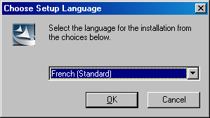
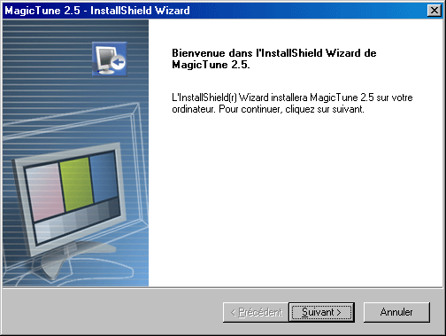
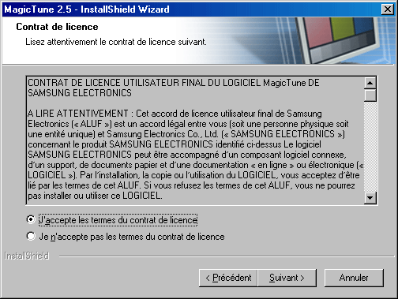
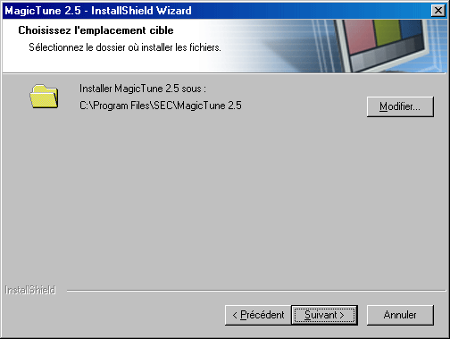
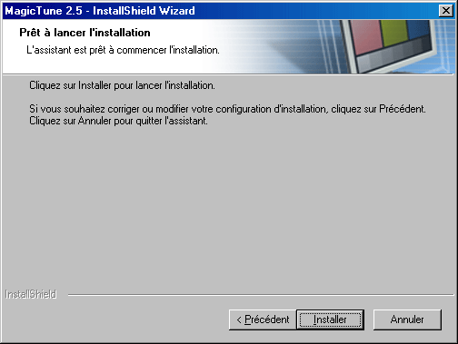
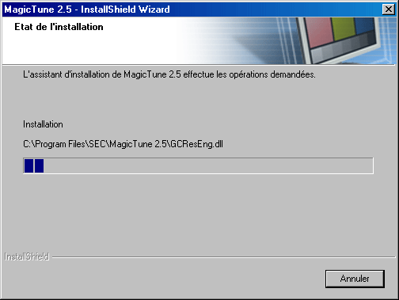
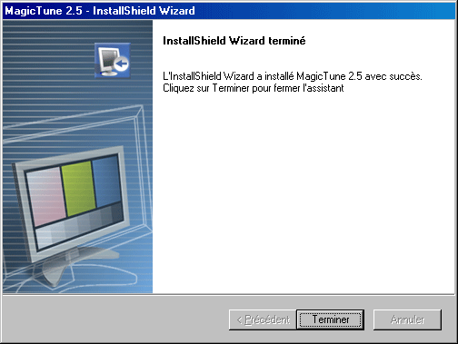
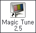
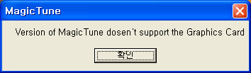

- Insérez le CD-ROM d'installation dans le lecteur de CD-ROM.
- Cliquez sur le fichier d'installation de MagicTune.
- Sélectionnez la langue utilisée lors de l'installation puis cliquez sur"Suivant".

- Lorsque la fenêtre InstallShield Wizard apparaît, cliquez sur "Suivant".

- Cochez "J'accepte les termes du contrat de licence" pour accepter les termes d'utilisation.

- Sélectionnez un dossier dans lequel peut s'installer le programme MagicTune.

- Cliquez sur "Installer".

- La fenêtre "Etat de l'installation".

- Cliquez sur "Terminer".

- Lorsque l'installation est terminée, l'icône exécutable de MagicTune 2.5 apparaît sur votre bureau.
 Double-cliquez sur cette icône pour lancer le programme.
|
|
 |
L'icône de MagicTune peut ne pas être visible. Cela dépend des spécificités de votre système informatique ou de votre moniteur. Si cela vous arrive, appuyez sur la touché F5.
|
|
|
- La fenêtre suivante apparaît si l'installation s'est bien passée.

- Le message d'erreur suivant indique que le système utilise une carte vidéo que MagicTune ne peut
pas gérer.


|
L'installation de MagicTune
2.5 peut être affectée par différents facteurs tels que la carte vidéo, la
carte mère ou l'environnement réseau.
Référez-vous au chapitre "En cas de problème" si vous avez
rencontré des difficultés pendant l'installation.
Systèmes d'exploitation
- Windows 98 SE
- Windows Me
- Windows NT
- Windows 2000
- Windows XP Home Edition
- Windows XP Professional
Matériel
- 32Mo de mémoire ou supérieur
- 25Mo de disque dur ou supérieur
* v site webde MagicTune.
|

 Problèmes d'installation
Problèmes d'installation  Installation
Installation